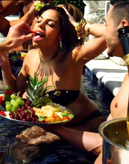

Clips
- Articles
- Fall Trend Spotting: Our Favorite Coats
- Halloween Styling: Retro Favorites and Joan Holloway
- Styling Inspiration: Valentino Spring 2014
- Paris Fashion Week Inspiration
- Fall Campaign Inspiration
- 6 Stages All DIY Fashion Designers Go Through When Creating a Collection
- October 2014 Favorites
- 10 Thoughts Everyone Has While Sewing Their Own Halloween Costume
- Remembering Oscar De La Renta
- Wear it Now, Wear it Later: the A Line Tank Dress
- Celebrity Style Inspiration: Emma Watson
- Styling a Men's Shirt
- NYFW Spring 2015: Reem Acra, Zac Posen, Oscar de la Renta, and Jenny Packham
- NYFW Spring 2015: Prabal Gurung, Jason Wu, Altuzarra, and Alexander Wang
- Red Carpet Watch: Emmy Awards and MTV Video Music Awards 2014
- Top 10 Patterns: Rock & Roll Favorites
- Petite Styling Tips
- Holiday Dress Styling
- Get Cozy: Styling Oversized Sweaters
- Find a Cape to Suit Your Style
- Collections
- Breakfast in Bed
- Highland Fling
- Strictly Ballroom
- Ingenue
- Rustic Weekend
- High Society
- Full Sail
- Well Traveled
- Open Road
- Golden Era
- Urban Renewal
- College Prep
- Ticket to Athens
- Space Odyssey
- Azure Coast
- Good Sport
- Blue Mood
- Gallery Tour
- Prep's Cool
- Necessary Neutrals
- Prairie Darling
- Sicilian Morning

- 6 NEW! Lancôme L'Absolu Rouge Lipstick Shades
- Get The Alexa Chung For Nails Inc. Leather And Lace Manicure Polish Look!
- The Best $6 Drugstore Concealer You Won't Find at Sephora!
- Get The Halloween Costume Idea Beauty Look: Disney Cartoon Snow White
- #FF Flashback Friday '90s Revival With Jane Cosmetics
- Smashbox Always Sharp Lip Pencil Self-Sharpens Every Time You Twist The Cap!
- A Beauty Editor's Best Spa Tip: Listen To Your Aesthetician
- Smashbox Be Legendary Lipstick - How To Wear Bright Orange Red, Pink Shades
- Hot Head Extensions - How to Temporarily Change Your Color Without Damage, Chemicals Like Nicole Richie
- The Best Matte Lipstick to Wear to an Outdoor Summer Concert: Lorac Alter Ego Lipstick
- Nugg Face Masks, Sephora FORMULA X Press Pods Nail Polish - 2 Best Mini, Bite-Sized Beauty Essentials for Travel
- 10 Best Drugstore Skincare Must-Have Products for Fighting Acne
- GOOP Approved Vapour Organic Beauty
- Get to Know Our Newest Writer: Mandie Williams
- #TBT Maybelline Limited Edition Bleached Neons Polish Collection
- Review: The Garment Saver - How to Avoid Makeup Smudges/Stains On Your Clothes (and Look Like You're About to Get Whacked)
- Physicians Formula Shimmer Strips Custom Eye Knhancing Kohl Kajal Eyeliner Trio, Laura Geller Love Me Dew

- Rachel Lynch of IHateBlonde Talks to Us About What it Takes to Make it as a Fashion Blogger
- Confession: I Love Very Hairy Men
- Don't Be Gross: How to Clean Your Makeup Brushes
- Help! I'm 25 and I Don't Know How to Dress Like an Adult
- Dita Von Teese Spills Her Seduction Tips, So Throw Out the Ladymags and Prepare to Take Notes